Recientemente muchos me preguntan cómo instalar múltiples versiones de node al mismo tiempo, cómo configurar las variables de entorno de node, cómo cambiar libremente entre varias versiones de node. Por todas estas razones, planeo escribir un artículo para explicar específicamente cómo instalar múltiples versiones de node!!!
Las versiones de node se puedendel sitio web chino de nodeo a miBaidu Cloud Drivedescargar
Al instalar múltiples versiones de node, debes comenzar instalando desde la versión más baja. Si instalas primero la versión más alta, aparecerán muchos problemas. Si ya la instalaste, desinstálala primero y luego sigue los siguientes pasos
Después de descargar, obtendrás el paquete de instalación. Hay paquetes de instalación de múltiples versiones de 32 bits y 64 bits; el usuario elige según su propio sistema
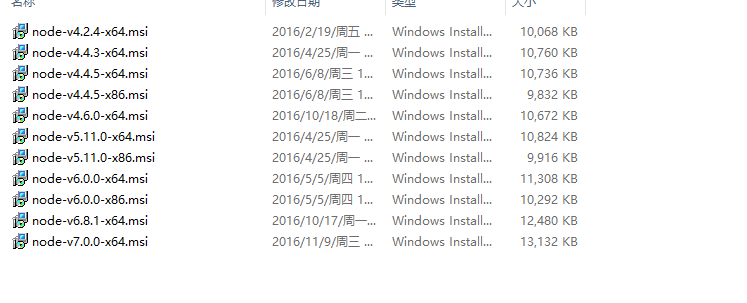
Antes de instalar node, primero elijo un directorio de instalación para node. Voy a instalarlo en el disco D, así que creé un directorio llamado node en el disco D, y dentro creé una carpeta llamada 4.42, porque dentro de esta carpeta instalaré la versión 4.42 de node
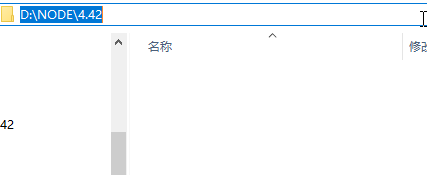
Comenzar la instalación:
Abre el paquete de instalación de node 4.42, haz clic en Siguiente continuamente hasta que aparezca la ruta de instalación:
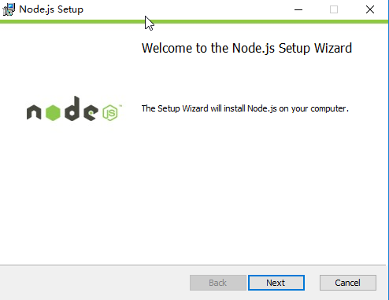
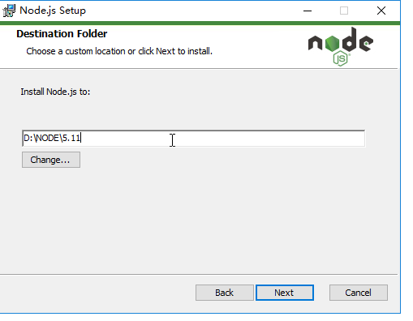
Cambia la ruta de instalación a la ruta de la carpeta 4.42 que creamos, luego sigue con Siguiente hasta el final. Después de una instalación exitosa, aparecerán muchos archivos en la carpeta; en este momento node ya está instalado
Cambia la ruta interna aD:\node\4.42\
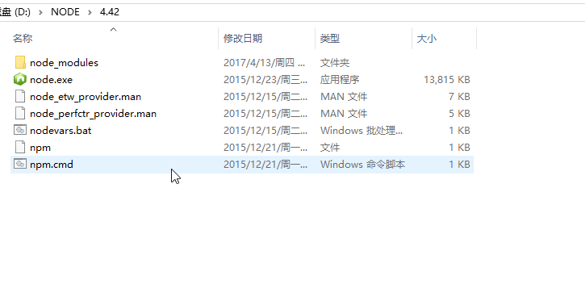
¿Después de instalar node ya se puede usar? Por supuesto que no. También necesitas configurar las variables de entorno: Equipo => Propiedades => Configuración avanzada del sistema => Variables de entorno
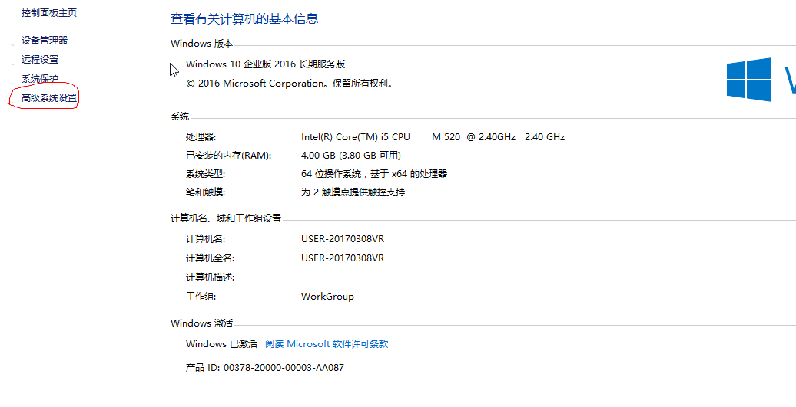
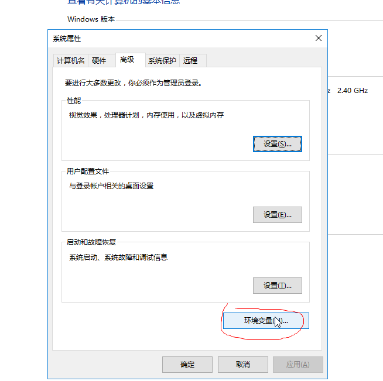

En las variables del sistema, haz clic en Nueva. Nombre de la variable: node_4.42. El valor de la variable es el directorio de instalación de tu versión 4.42, es decir,D:\node\4.42\
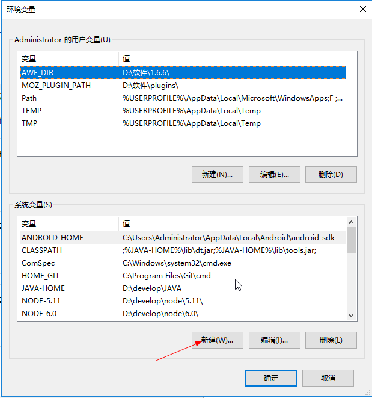
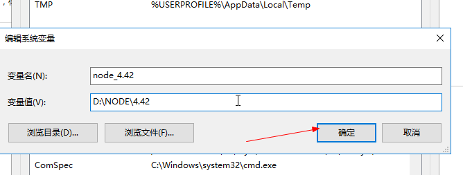
Después de hacer clic en Aceptar, en las variables del sistema buscapathla variable; después de seleccionarla, haz clic en Editar
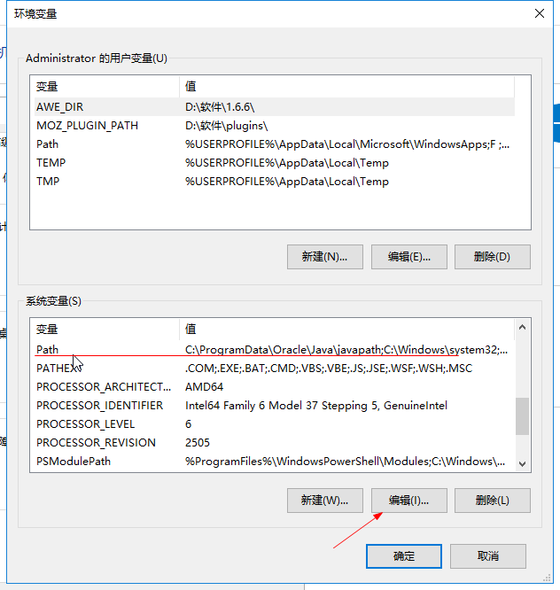
Vespathlos valores en la variable? Agregamos la variable que acabamos de crear aquí. ¿Cómo agregarla? Un par de%símbolos [punto y coma], escribe en medio el nombre de la variable recién creada, luego colócalo al final de path. No olvides el;símbolo [punto y coma] en el medio; entre cada variable debería haber un;
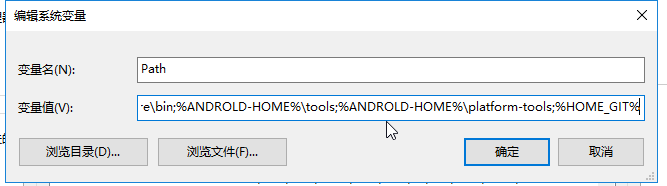
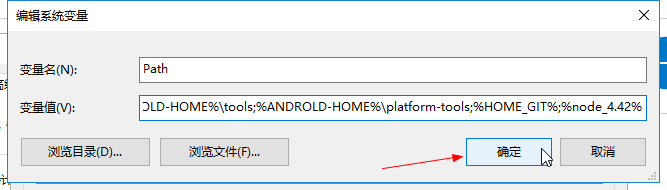
Después de colocarlo, haz clic en Aceptar, y luego abrimosCMD(win+R); escribe:
$ node -v
Si aparece el número de versión, entonces nuestro primer node se ha instalado correctamente y se puede usar normalmente;
Instalar múltiples versiones: una vez instalado el primero, instala la segunda versión de node;
Antes de instalar la nueva versión, lo que necesitamos hacer es primero encontrar el directorio de instalación de la versión anterior, es decir,D:\node\4.42luego cambiarle el nombre a la carpeta 4.42 (porque si no cambias el nombre, al instalar la nueva versión, sin importar dónde la instales, eliminará la anterior):
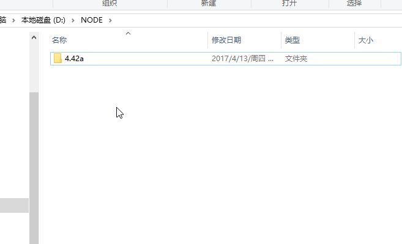
Después de modificarlo, crea un nuevo directorio; lo llamaré 5.11 (porque planeo instalar la versión 5.11 a continuación)
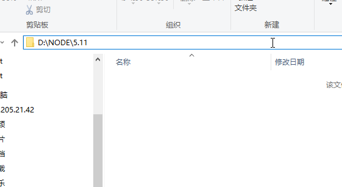
A continuación, solo comienza a instalar 5.11; el proceso es igual al anterior, y después de configurar las variables de entorno, nuestro 5.11 quedará instalado.
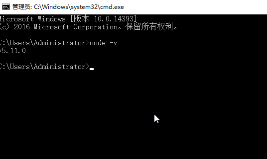
Después de instalar la versión 5.11, volvemos y le cambiamos el nombre al directorio 4.42 para restablecerlo;
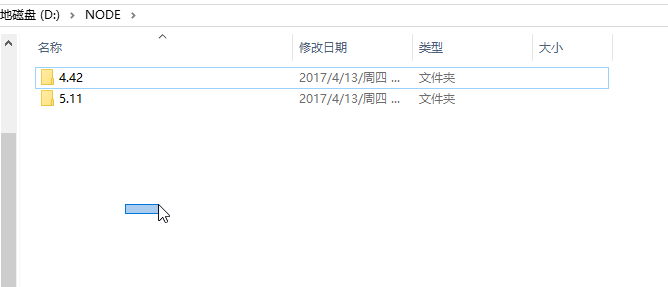
Verifiquemos si actualmente tenemos dos versiones de node instaladas:where nodey la versión actualmente en uso:node -v
$ where node
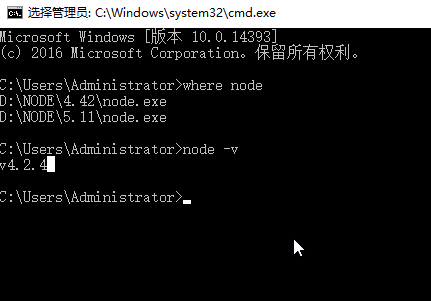
'where node' muestra dos, lo que indica que de hecho hemos instalado dos versiones de node,node -v¡¡¡Nos dice cuál versión estamos usando actualmente!!!
Si queremos instalar otras versiones, el método es el mismo; solo sigue lo anterior.
Supongamos que ahora tenemos muchas versiones de node instaladas, pero la versión actual de node no es la que quiero usar. ¿Qué hago? ¿Cómo cambio de versión de node?
Abre las variables de entorno y buscapathLa versión que quieras usar, pon esa variable de node al frente de todas las variables de node. Por ejemplo, mi path anterior era %node_4.42%;%node_5.11%, y estaba usando la versión 4.42; si quiero
usar la versión 5.11, tengo que cambiar lo que está en path%node_4.42%;%node_5.11%a%node_5.11%;%node_4.42%
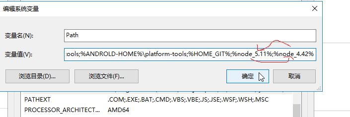
《2. En este momento, echemos un vistazo de nuevo:where node和node -v
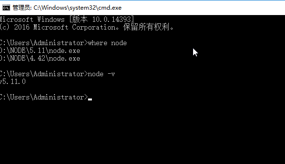
Así es como se instalan múltiples versiones de node y se cambia entre versiones de node.
Autor original: 小鳥依家
Enlace al artículo original:http://www.birdshome.top/2017/04/13/nodejs/